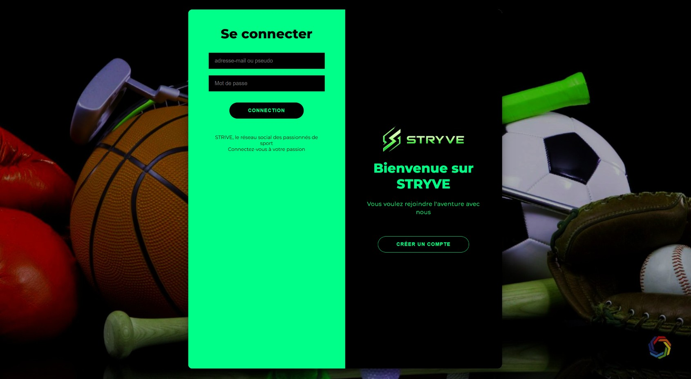
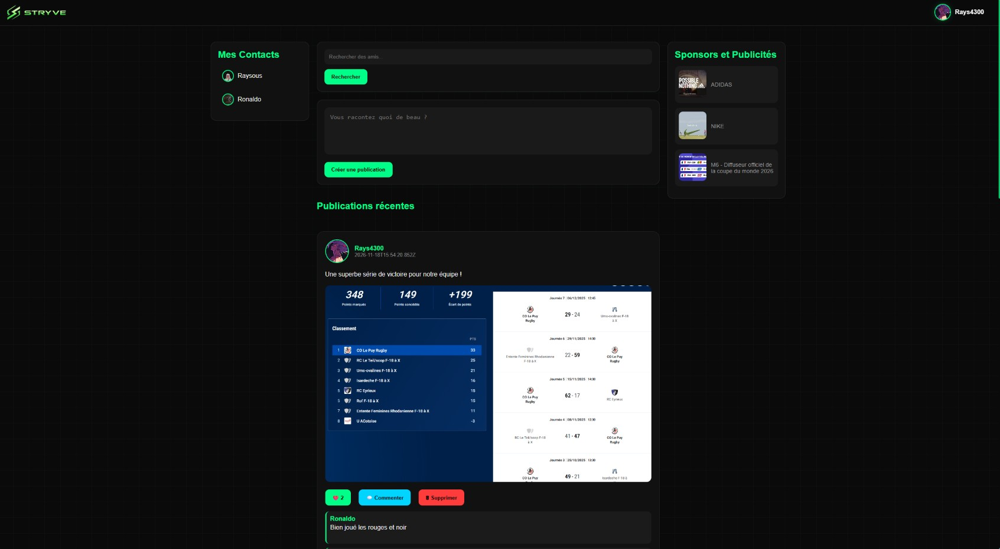
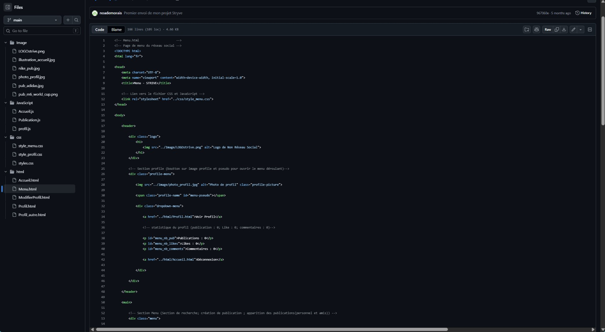
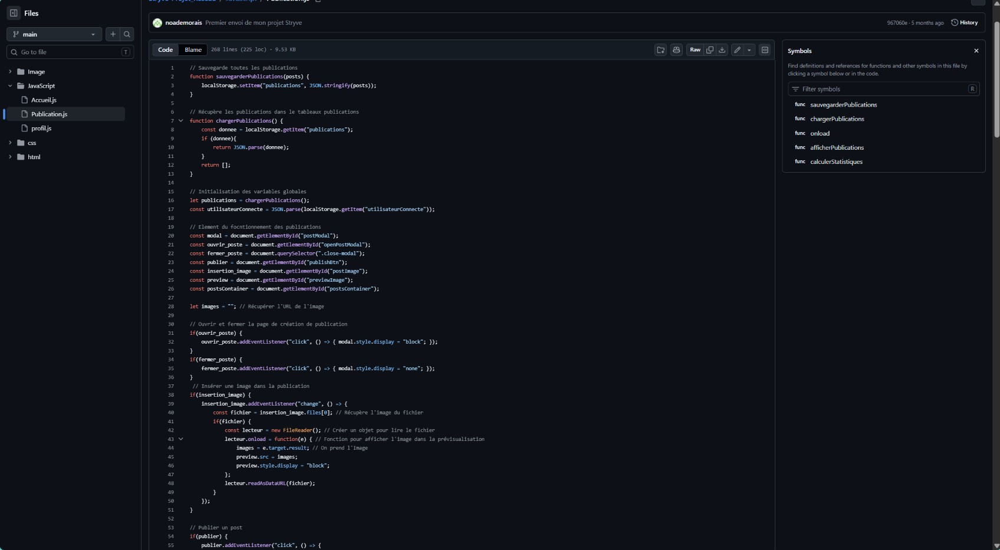

← Retour aux projets
STRYVE
Réseau social dédié aux passionnés de sport — design et développement front-end
HTML5
CSS3
JavaScript
Visual Studio Code
Canva

Contexte & sujet
Dans le cadre d'un cours de développement web, nous avons conçu STRYVE, un réseau social destiné aux sportifs amateurs, compétiteurs et passionnés. La plateforme permet d'échanger, de publier des performances, de suivre l'actualité sportive et de communiquer avec d'autres membres.
Projet réalisé en équipe dans le cadre du BUT Informatique Graphique — 1ère année.
Objectifs visés
- Concevoir une interface moderne et ergonomique
- Développer un réseau social spécialisé sport
- Architecture inspirée des réseaux sociaux existants
- Design responsive tous supports
- Cohérence visuelle et expérience utilisateur
Mes missions
- Création de l'identité visuelle STRYVE
- Conception des maquettes et architecture pages
- Développement page de connexion (HTML/JS)
- Développement page principale (HTML/JS)
- Adaptation responsive mobile et tablette
Étapes du projet
- Analyse Idéation, public cible, croquis
- Identité visuelle Nom, logo, palette, typographie
- Maquettes Architecture, wireframes
- Développement HTML, CSS, JavaScript
- Responsive Adaptation mobile, tablette
Illustrations

Page connexion STRYVE
Page principale — fil d\'actualité
Code HTML — inscription
Code JavaScriptCompétences techniques
Transversales
Outils utilisés
Compétences académiques validées
Développement web front-end · Conception UI/UX · Responsive design · Identité visuelle · Gestion de projet · Travail collaboratif